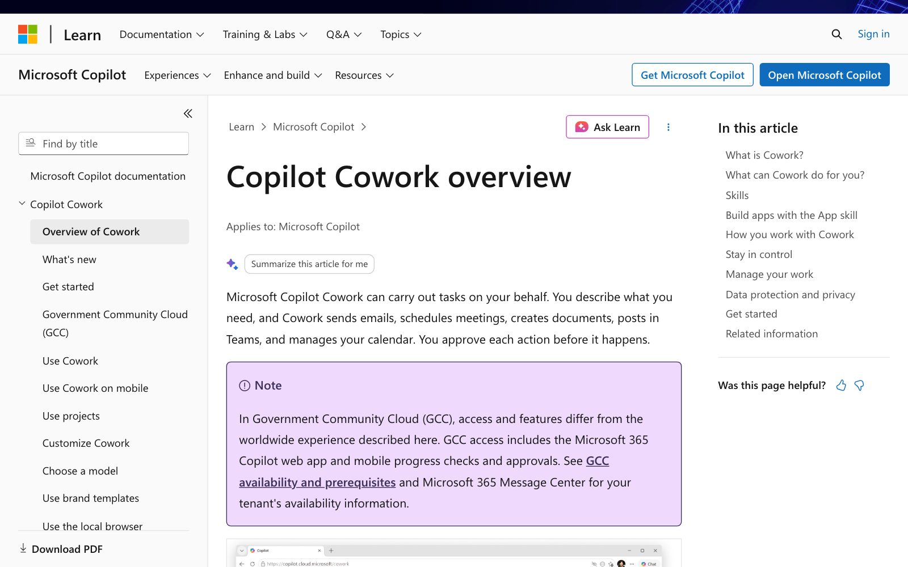
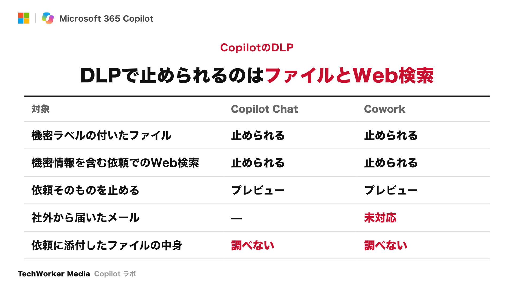
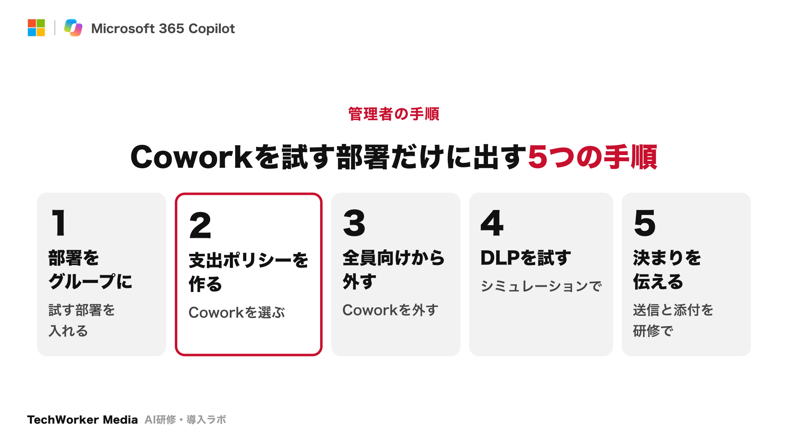

Copilot Cowork（コワーク）は、Microsoft Copilotの中で、利用者の代わりに作業を進める機能です。メールの送信、会議の設定、文書の作成、Teamsへの投稿などを行います。職場・学校のアカウント向けは一般提供されています。
- Copilot Chatとの違い：Chatは1つの会話の中で答えや下書きを返します。Coworkは複数のアプリをまたいで、数分から数時間かけて操作まで進めます。
- 必要なもの：Microsoft 365 Copilotのライセンスと、使った分を払う従量課金（Copilotクレジット）です。
- 管理者の要点：使える人は、Coworkを選んだ「支出ポリシー」の範囲で決まります。上限を1クレジットにしても、範囲に入った人は使えます。
Microsoft Learnと料金ページの公式情報（2026年11月16日確認）をもとにまとめます。扱うのは、違い、料金、使える人の決め方、DLP（情報の持ち出しを止める仕組み）の範囲です。

出典：Microsoft Learn「Copilot Cowork overview」の画面（2026年11月20日に撮影）
Copilot Coworkとは何ですか？
利用者が頼んだ作業を、Microsoft 365の中で代わりに実行する機能です。メールの送信などの操作の前には、利用者に承認を求めます。
Microsoft Learnの概要ページは、Coworkを次のように説明しています。
原文“Microsoft Copilot Cowork can carry out tasks on your behalf. You describe what you need, and Cowork sends emails, schedules meetings, creates documents, posts in Teams, and manages your calendar. You approve each action before it happens.”
日本語訳Microsoft Copilot Coworkは、あなたの代わりに作業を実行できます。必要なことを伝えると、Coworkはメールを送り、会議を設定し、文書を作り、Teamsに投稿し、予定表を管理します。各操作は、実行の前にあなたが承認します。
同じページでは、できることを次のように挙げています。
- メール：Outlookで下書き、返信、転送、送信をします。
- 予定と会議：予定を作り、出席者を足し、重なった予定を整理します。
- 文書：Word・Excel・PowerPoint・PDFを作ります。OneDriveとSharePointにある既存のファイルも直せます。
- Teams：チャネルとチャットに投稿します。
- 調べもの：社内の資料を探し、複数の情報源を調べてまとめます。
- 決まった時刻の実行：依頼文を予約し、毎週の作業を自動で動かします。
Coworkが使えるのは、利用者が開けるファイルとメールだけです。利用者に権限のないファイルは、Coworkも読めません。職場・学校のアカウント向けは一般提供、個人のアカウント向けはプレビューです。
この説明で分かるのは機能の範囲までです。日本語での動作の範囲は、確かめた公式ページに明記がありません。製品名がMicrosoft Copilotに変わった点は、Microsoft 365 Copilotの法人料金と契約で説明しています。時刻を決めて動かす従来のスケジュールされたプロンプトは、2026年12月31日に廃止されます。作り直しの手順はCopilotのスケジュールされたプロンプトの終了にまとめています。
Copilot Chatとは何が違いますか？
Chatは1つの会話の中で答えや下書きを返します。Coworkは複数のアプリとファイルをまたいで、操作まで進めます。
| 比べる点 | Copilot Chat | Copilot Cowork |
|---|---|---|
| 役割 | 下書き、要約、質問への答え | 複数の手順の作業を最後まで進める |
| かかる時間 | 数秒〜数分 | 数分〜数時間（Coworkが自分で進める） |
| 向く仕事 | すぐ欲しい下書き、答え、気づき | アプリ・ファイル・システムをまたぐ操作 |
| 代表的な使い方 | 1日の振り返り、進み具合の確認、質問、下書き | 受信箱と予定表の整理、プロジェクトの立ち上げ、会議の準備 |
| 料金 | ライセンスに含まれる | 使った分をCopilotクレジットで払う |
出典：Microsoft Learn「Copilot Cowork common questions」の比較表をTechWorkerが日本語にまとめたもの（2026年11月6日更新）。料金の行はMicrosoft「Microsoft Copilot の価格」（2026年11月16日確認）。
Coworkには、組み込みのスキル（決まった作業の手順）が14あります（うち「App」はFrontierのプレビュー）。Word、Excel、PowerPoint、PDF、メール、予定、会議、毎日の要約、社内検索、調査などです。利用者は、自分のスキルも最大50個まで足せます。OneDriveの「/Documents/Cowork/skills/」に、SKILL.mdという指示のファイルを置きます。
同じSKILL.mdの形式は、Google Workspaceのスキルでも使われています。Google側の管理者の設定はGoogle Workspaceのスキルとはにまとめました。
使うには何が必要で、料金はいくらですか？
Microsoft 365 Copilotのライセンスが必要です。そのうえで、Coworkの利用は使った分だけCopilotクレジットで払います。
Microsoftの日本の料金ページは、よくある質問で次のように説明しています。
原文（日本語）「チャットや Microsoft 365 アプリの Copilot など、日常的に利用する AI 機能はライセンスに含まれています。より高度な AI 機能は、使用量に応じて課金されます。現在、対象となるのは Copilot Cowork、Copilot Code、Copilot Autopilot、Work IQ API などです。」
管理者向けの従量課金の説明でも、対象のサービスの一覧に「Cowork（Copilotのライセンスが必要）」と書かれています。無料のCopilot Chatだけの利用者が使えるとする記載は、確かめた公式ページにありません。
| ライセンス | 1ユーザーの月額（年払い・税別） | Coworkの利用 |
|---|---|---|
| Microsoft 365 Copilot（大企業向け） | 4,497円相当 | 別にクレジットで払う |
| Microsoft 365 Copilot Business（追加分） | 3,148円相当（割引中は初年度2,698円） | 別にクレジットで払う |
| Copilot Chat（無料） | 追加料金なし | 使えるとする記載なし |
出典：Microsoft「Microsoft Copilot の価格」「Microsoft Copilot のプランと価格 - Enterprise」（2026年11月16日確認）。Businessの割引は2026年7月1日〜12月31日のキャンペーンです。Copilot Businessの追加分は、対象のビジネスプランを使っている既存のMicrosoft 365のお客様だけが契約できます。年間契約が条件で、割引は初年度だけです。
クレジットに数えるのは、モデルの応答、ツールやスキルの呼び出し、画像の生成、ブラウザでの作業などです。管理者向けの手順には、利用者ごとの月の上限を1人2,000クレジット以上にするよう書かれています（原文「Set at least 2,000 credits per user per month」）。この値は今後変わりうる、とも書かれています。
1クレジットの単価は、Coworkの公式ページでは確かめられませんでした。見積もりは、公式のCopilot Credit Estimator（クレジットの見積もりの道具）で出します。ライセンスの選び方と料金表は、Microsoft 365 Copilotの法人料金と契約にまとめています。Ignite 2026で発表された費用の管理画面（Agent 365 Cost Management）は、Microsoft Ignite 2026のCopilotまとめで扱っています。主要4社の料金比較表と稟議書の雛形は、下の枠から受け取れます。
誰がCoworkを使えるかは、どこで決まりますか？
Coworkを選んだ支出ポリシーの範囲に入っているかで決まります。上限の額を小さくしても、使えなくはなりません。
支出ポリシーは、使えるサービスと月の上限を決める設定です。Microsoft 365 管理センターの「Copilot > Cost Management > Configuration」で作ります。公式は、これが予算であり、利用の許可でもあると書いています。
原文“A spending policy is an access control, not only a budget. Any user in the scope of a spending policy that selects Cowork can use Cowork, regardless of how small the credit limit is.”
日本語訳支出ポリシーは予算であるだけでなく、利用の許可でもあります。Coworkを選んだ支出ポリシーの範囲にいる利用者は、上限のクレジットがどれだけ小さくても、Coworkを使えます。
公式のページには、つまずきやすい例が載っています。試す人のグループに5,000クレジット、全員に1クレジットの2つのポリシーがあり、どちらもCoworkを選んでいる場合です。この場合、全社員がCoworkを使えます。試す人だけに絞るには、全員向けのポリシーからCoworkを外します。
- 使わせない方法：使わせない人は、Coworkを選んだすべてのポリシーから外します。クレジットの消費と上限の判定は後から行われるため、上限に達した後も作業をいくつか始められる場合があります。
- 古い設定：プレビューのころに使った「エージェント > すべてのエージェント」のCoworkの設定は、いまは使える人に影響しません。
- 自動で足す設定：ポリシーを作るとき、新しく対応したサービスを自動で足す「Auto-apply new services」が既定でオンです。範囲を広げたくないポリシーでは、公式もオフにするよう書いています。
- 表示の設定：「AI experiences enabled by usage-based billing」の設定は、利用者に見えるかだけを決めます。Coworkを見える状態にして従量課金を有効にしていないと、利用者はアプリの中から利用を申請できます。管理者は、方針・費用・法令順守に照らして申請を審査します。
Anthropicのモデルを止める設定（Copilot > Settings）は、選べるモデルを変えるだけです。Coworkを使えるかどうかは変わりません。
社外秘の情報は、DLPでどこまで止められますか？
Microsoft PurviewのDLPで止められるのは、機密ラベルの付いたファイルの利用と、機密情報を含む依頼での外部のWeb検索です。依頼そのものを止める機能はプレビューです。

| DLPでできること | Copilot Chat・Microsoft 365 Copilot | Copilot Cowork |
|---|---|---|
| 機密ラベルの付いたファイル・メールを回答に使わせない（メールは2025年1月1日以降に送られたもの。予定表の招待は対象外） | 使える | 使える |
| 機密情報を含む依頼のとき、外部のWeb検索を使わせない | 使える | 使える |
| 機密情報を含む依頼そのものを止める | プレビュー | プレビュー |
| 社外から届いたメールを回答に使わせない | プレビュー | 未対応 |
| 依頼に添付したファイルの中身を調べる | 調べない | 調べない |
出典：Microsoft Learn「Microsoft Purview DLP for Microsoft 365 Copilot and Cowork」（2026年11月9日更新、2026年11月16日確認）。プレビューと書かれていない機能を「使える」としています。
設定は、Microsoft Purviewポータルの「データ損失防止 > ポリシー」で作ります。カスタムのテンプレートを選び、場所の「Microsoft Copilot, Copilot Chat, and Copilot Cowork」をオンにします。この場所を選ぶと、同じポリシーでほかの場所は選べません。
ポリシーを変えてから反映されるまで、最大4時間かかります。CopilotとCoworkでは、ポリシーを試しに動かすシミュレーションのモードも使えます。
注意したいのは、依頼に添付したファイルです。公式は、DLPが調べるのは依頼に打ち込んだ文字だけで、添付したファイルの中身は調べないと書いています。社外秘のファイルを添付してよいかは、社内の決まりと研修で伝える必要があります。GoogleやCloudflareのDLPと止められる範囲を比べた表は、AI DLPとはにまとめました。
Coworkは、利用者が開けるファイルをすべて使えます。共有の範囲が広すぎるファイルがあると、Coworkもそれを読みます。導入前の点検はMicrosoft 365 Copilot導入前のSharePoint権限棚卸しで説明しています。
メールの送信などの操作は、どう承認しますか？
Coworkは、メールの送信やTeamsへの投稿の前に、利用者に承認を求めます。承認を省く選び方もあるため、どこまで省いてよいかを社内で決めます。
承認の画面では、次の3つから選びます。中・高リスクの操作には、リスクの度合いの表示が付きます。
- 送信・投稿・作成のボタン：今回だけ実行します。
- そのほかの選択肢：同じ会話の残りで、似た操作の確認を省きます。メールとTeamsでは、特定の宛先だけ、ドメインだけ、いつも、から範囲を選べます。
- キャンセル：操作を止めます。
決まった時刻や、メール・Teamsの着信をきっかけに動く自動のタスクは、作った人の権限で動きます。既定では、メールの送信などの前に承認を求めます。タスクを作るときに、先に承認しておくこともできます。
外部のアプリにつなぐコネクタの書き込み（作成・更新・削除）は、2026年11月9日の公式ブログで、Copilot ChatとCoworkでの一般提供が発表されました。新しい書き込みの道具は既定で「承認が必要」、読み取りの道具は既定で「いつも許可」です。
ブラウザでの作業と自動のタスクは、統合監査ログに残ります。社外宛てのメールでは「いつも」を選ばない、という決まりを最初に置くのがTechWorkerの提案です。
管理者は、何から決めればよいですか？
試す部署を1つ決め、その部署だけを範囲にした支出ポリシーを作るところから始めます。

- 試す部署と人数を決める：受信箱と予定の整理、会議の準備が多い部署が向いています。対象の人をEntraのセキュリティグループに入れます。
- 支出ポリシーを作る：Copilot > Cost Management > Configurationで、範囲をそのグループにし、Coworkを選びます。月の上限も決めます。
- 全員向けのポリシーを見直す：Coworkが選ばれていないか、Auto-apply new servicesがオンのままでないかを確かめます。
- DLPを試す：Coworkを含む場所でポリシーを作り、シミュレーションで動きを見てから有効にします。
- 承認と添付の決まりを伝える：社外宛ての送信と、社外秘のファイルの添付の扱いを、研修で教えます。
稟議では、次の5つをよく聞かれます。
- 費用：対象の人数、ライセンスの費用、月のクレジットの上限です。
- 止め方：使わせない人を、どのポリシーから外すかです。
- 情報の扱い：DLPで止める情報と、止められない添付のファイルです。
- 操作の承認：社外宛ての送信を、誰がどう承認するかです。
- 記録：操作が監査ログにどう残るかです。
エージェントの利用の見え方はCopilotのエージェント利用状況レポートで説明しています。このレポートにはCoworkが数えられない点も書きました。
全社に広げる前に、何人が使い続けたかを測る方法はMicrosoft Copilotが定着しない原因と対策にまとめています。
よくある質問
職場・学校のアカウントでは、無料では使えません。Microsoft 365 Copilotのライセンスが必要で、Coworkの利用は使った分をCopilotクレジットで払います。無料のCopilot Chatだけの利用者が使えるとする記載は、2026年11月16日に確かめた公式ページにありません。個人のアカウント向けはプレビューで、この記事では扱いません。
2026年11月16日に確かめた公式ページには、日本語への対応の明記がありません。試す部署を決める前に、自社のテナントで日本語の依頼を何件か試して確かめます。
その社員をMicrosoft Entraのセキュリティグループに入れ、Coworkを選んだ支出ポリシーの範囲をそのグループだけにします。全員を範囲にしたポリシーでCoworkが選ばれていると、上限の額に関係なく全員が使えます。
すぐには止まりません。クレジットの消費と上限の判定は後から行われるため、上限に達した後も作業をいくつか始められる場合があります。上限に達した後は、月初にクレジットが戻るまで使えなくなります。使わせない人は、上限を下げずにポリシーの範囲から外します。
選べます。Microsoft 365 管理センターのCopilotの設定（Settings）で、Anthropicのモデルを含むモデルを止められます。止めても、Coworkを使えるかどうかは変わりません。利用者が「自動」を選ぶと、残ったモデルから選ばれます。
次の一歩は何から始めればよいですか？
いまの支出ポリシーの一覧を開き、Coworkが選ばれているポリシーと、その範囲を確かめることから始めます。
- Microsoft 365 管理センターの「Copilot > Cost Management > Configuration」で、すべてのポリシーを確かめます。
- 試す部署のグループと、月の上限を決めます。
- Microsoft Purviewで、Coworkを含む場所のDLPをシミュレーションで試します。
TechWorkerでは、Microsoft 365 Copilotを含む生成AIの研修を、受講者の実際の業務1本から組みます。30日後に、使った人の割合と1件の時間を測って報告します。検討段階のご相談だけでも歓迎です。
出典と確認範囲
確認日：2026年11月16日。料金は税別の日本円です。日本語での動作、自社のテナントでの画面の表示は、TechWorkerでは確かめていません。製品と料金の条件は変わるため、契約と設定の時点で公式情報を確認してください。
- Microsoft Learn「Copilot Cowork overview」（2026年11月6日更新）
- Microsoft Learn「Copilot Cowork common questions」（2026年11月6日更新）
- Microsoft Learn「Manage Copilot Cowork for your organization」（2026年11月6日更新）
- Microsoft Learn「Determine access controls for Copilot Cowork」（2026年11月4日更新）
- Microsoft Learn「Managing AI experiences enabled by usage-based billing」（2026年10月30日更新）
- Microsoft Learn「Usage-Based Billing and Cost Management for Copilot Credits」（2026年10月30日更新）
- Microsoft Learn「Microsoft Purview DLP for Microsoft 365 Copilot and Cowork」（2026年11月9日更新）
- Microsoft Copilot Blog「Turn Copilot insights into action with connector write capabilities」（2026年11月9日）
- Microsoft「Microsoft Copilot の価格」
- Microsoft「Microsoft Copilot のプランと価格 - Enterprise」